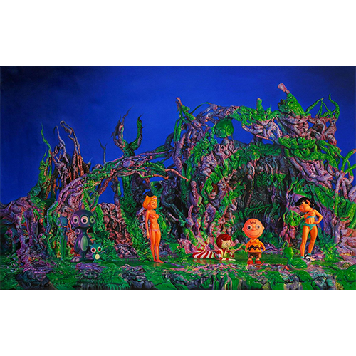
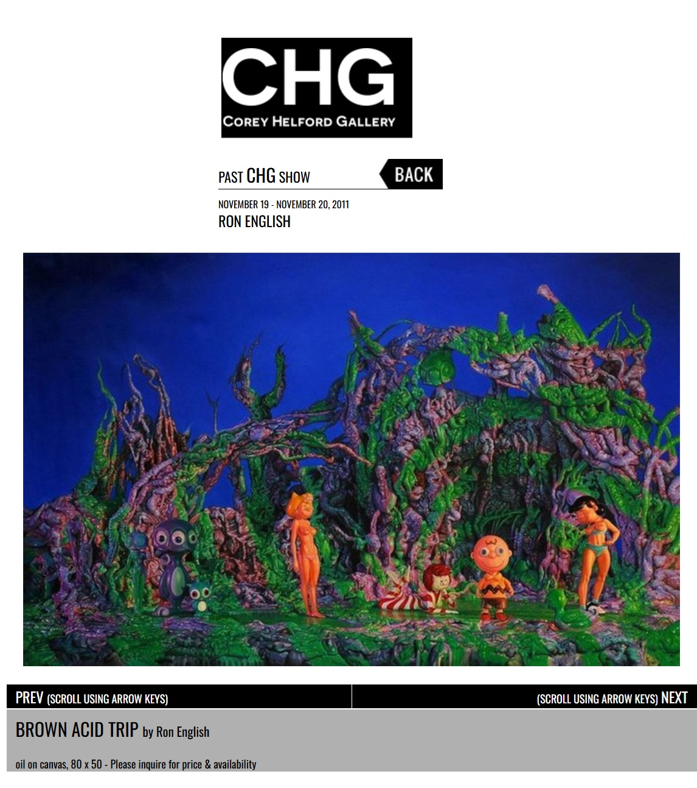
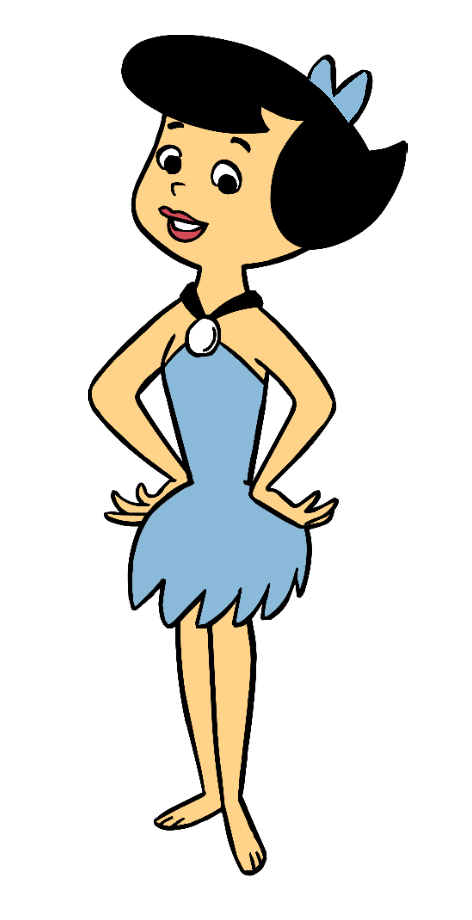
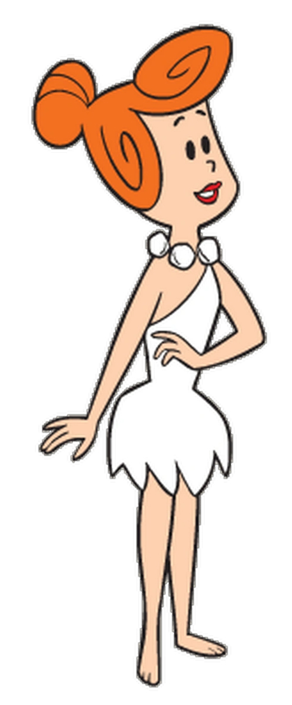

Exhibitions
Seasons In Supurbia, Corey Helford Gallery, Culver City, California, US, November 19–December 10, 2011.
Literature
Ron English, Status Factory: The Art of Ron English (San Francisco: Last Gasp of San Francisco, 2014), p. 112. ISBN 978-0867197891.
Notes
This work appears on Corey Helford Gallery’s artwork page for the exhibition Seasons In Supurbia, available here, accessed April 11, 2026.
The composition references the Peanuts characters Peppermint Patty and Charlie Brown, both created by Charles M. Schulz, as well as Betty Rubble and Wilma Flintstone from The Flintstones; representative images are available here, here, here, and here.
Ancillary Documentation




